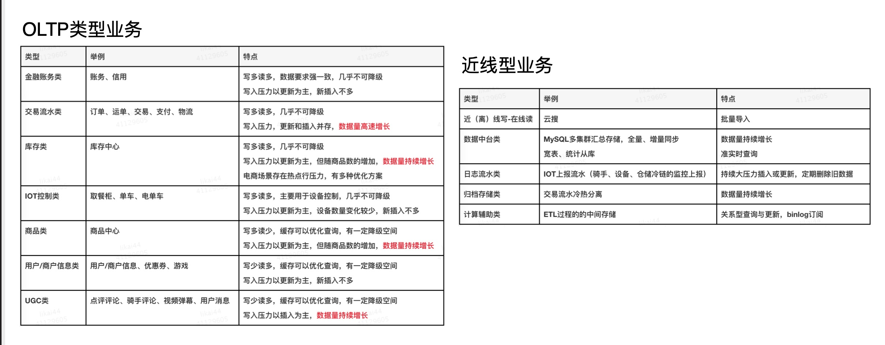
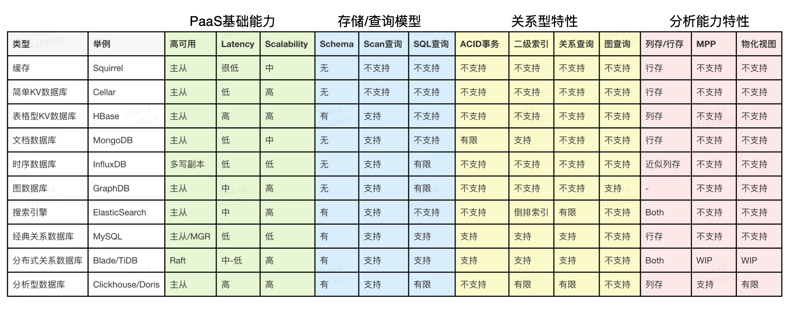
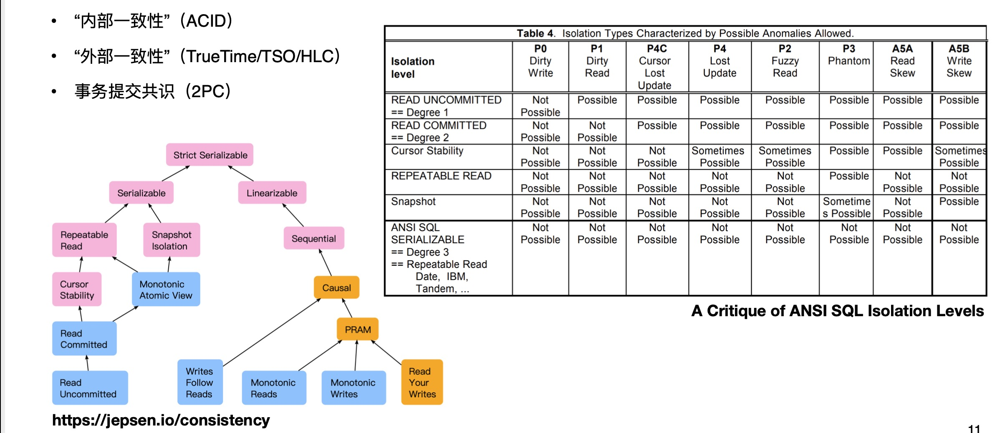
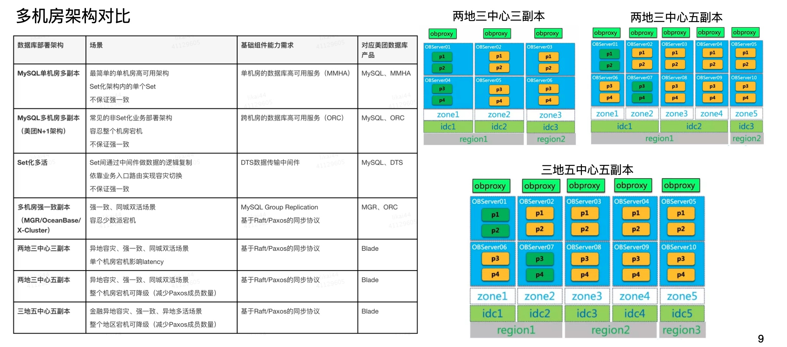
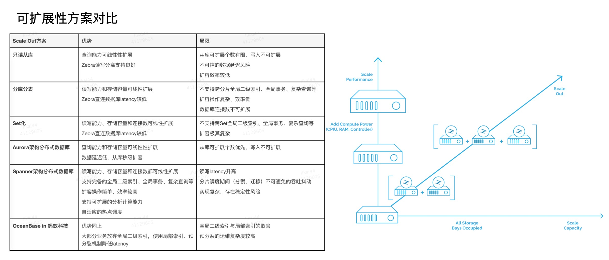
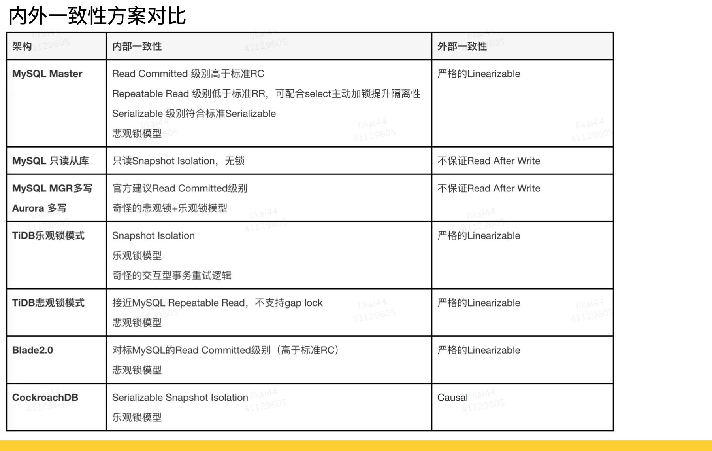
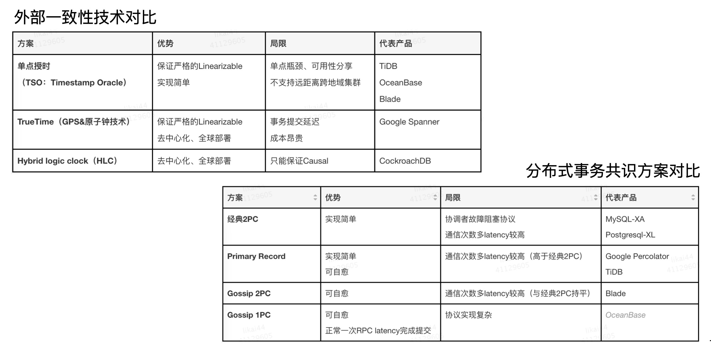
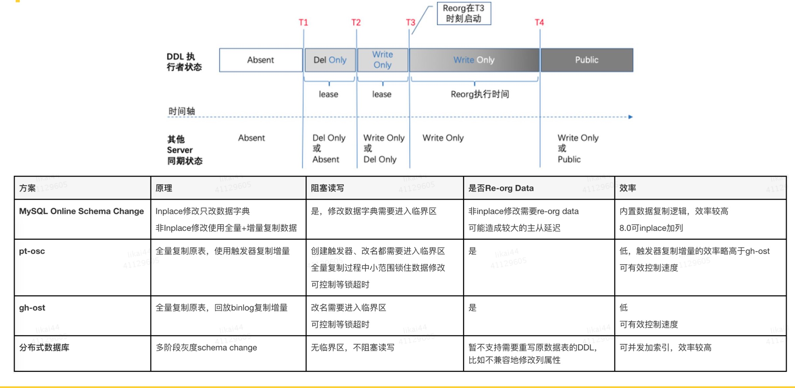
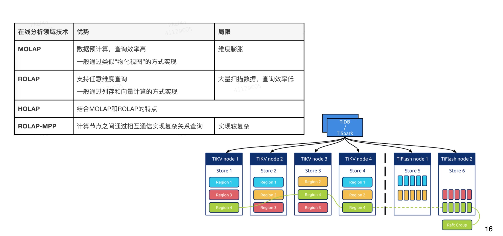

<!DOCTYPE html>
<html>
<head><meta name="generator" content="Hexo 3.9.0">
  <meta charset="utf-8">
  
  <title>数据库选型 | 守株阁</title>
  <meta name="viewport" content="width=device-width, initial-scale=1, maximum-scale=1">
  <meta name="description" content="业务场景分类讨论 OLTP 类 金融账务类：账务、信用 交易流水类：订单、运单、交易、支付、物流 库存类：库存中心 IOT 控制类：取餐柜、单车、电单车 商品类：商品中心 用户/商户信息类：用户商户信息、优惠券、游戏 ugc：点评评论、弹幕、用户消息  近线型 近（离线写）-在线读 数据中台类：MySQL 多集群汇总存储 日志流水类：IOT 上报流水 归档存储类：交易流水冷热分离 计算辅助类：ET">
<meta name="keywords" content="数据库">
<meta property="og:type" content="article">
<meta property="og:title" content="数据库选型">
<meta property="og:url" content="http://yoursite.com/2021/03/10/数据库选型/index.html">
<meta property="og:site_name" content="守株阁">
<meta property="og:description" content="业务场景分类讨论 OLTP 类 金融账务类：账务、信用 交易流水类：订单、运单、交易、支付、物流 库存类：库存中心 IOT 控制类：取餐柜、单车、电单车 商品类：商品中心 用户/商户信息类：用户商户信息、优惠券、游戏 ugc：点评评论、弹幕、用户消息  近线型 近（离线写）-在线读 数据中台类：MySQL 多集群汇总存储 日志流水类：IOT 上报流水 归档存储类：交易流水冷热分离 计算辅助类：ET">
<meta property="og:locale" content="zh-Hans">
<meta property="og:image" content="http://yoursite.com/2021/03/10/数据库选型/业务类型分类.jpeg">
<meta property="og:image" content="http://yoursite.com/2021/03/10/数据库选型/数据结构与适用场景.jpeg">
<meta property="og:image" content="http://yoursite.com/2021/03/10/数据库选型/acid-一致性.jpeg">
<meta property="og:image" content="http://yoursite.com/2021/03/10/数据库选型/单机房架构比较.jpeg">
<meta property="og:image" content="http://yoursite.com/2021/03/10/数据库选型/可扩展性方案对比.jpeg">
<meta property="og:image" content="http://yoursite.com/2021/03/10/数据库选型/事务特性.jpeg">
<meta property="og:image" content="http://yoursite.com/2021/03/10/数据库选型/内外部一致性比较.jpeg">
<meta property="og:image" content="http://yoursite.com/2021/03/10/数据库选型/表结构变更.jpg">
<meta property="og:image" content="http://yoursite.com/2021/03/10/数据库选型/在线实时分析.jpeg">
<meta property="og:updated_time" content="2021-03-12T05:23:30.377Z">
<meta name="twitter:card" content="summary">
<meta name="twitter:title" content="数据库选型">
<meta name="twitter:description" content="业务场景分类讨论 OLTP 类 金融账务类：账务、信用 交易流水类：订单、运单、交易、支付、物流 库存类：库存中心 IOT 控制类：取餐柜、单车、电单车 商品类：商品中心 用户/商户信息类：用户商户信息、优惠券、游戏 ugc：点评评论、弹幕、用户消息  近线型 近（离线写）-在线读 数据中台类：MySQL 多集群汇总存储 日志流水类：IOT 上报流水 归档存储类：交易流水冷热分离 计算辅助类：ET">
<meta name="twitter:image" content="http://yoursite.com/2021/03/10/数据库选型/业务类型分类.jpeg">
  
    <link rel="alternate" href="/atom.xml" title="守株阁" type="application/atom+xml">
  
  
    <link rel="icon" href="/favicon.png">
  
  
  <link rel="stylesheet" href="/css/style.css">
  

<link rel="stylesheet" href="/css/prism.css" type="text/css">
<link rel="stylesheet" href="/css/prism-line-numbers.css" type="text/css"></head>
</html>
<body>
  <div id="container">
    <div id="wrap">
      <header id="header">
  <div id="banner"></div>
  <div id="header-outer" class="outer">
    
    <div id="header-inner" class="inner">
      <nav id="sub-nav">
        
          <a id="nav-rss-link" class="nav-icon" href="/atom.xml" title="RSS Feed"></a>
        
        <a id="nav-search-btn" class="nav-icon" title="搜索"></a>
      </nav>
      <div id="search-form-wrap">
        <form action="//google.com/search" method="get" accept-charset="UTF-8" class="search-form"><input type="search" name="q" class="search-form-input" placeholder="Search"><button type="submit" class="search-form-submit">&#xF002;</button><input type="hidden" name="sitesearch" value="http://yoursite.com"></form>
      </div>
      <nav id="main-nav">
        <a id="main-nav-toggle" class="nav-icon"></a>
        
          <a class="main-nav-link" href="/">首页</a>
        
          <a class="main-nav-link" href="/archives">归档</a>
        
          <a class="main-nav-link" href="/about">关于</a>
        
      </nav>
      
    </div>
    <div id="header-title" class="inner">
      <h1 id="logo-wrap">
        <a href="/" id="logo">守株阁</a>
      </h1>
      
        <h2 id="subtitle-wrap">
          <a href="/" id="subtitle">一切都是守株待兔，如切如磋，如琢如磨。I am just joking.</a>
        </h2>
      
    </div>
  </div>
</header>
      <div class="outer">
        <section id="main"><article id="post-数据库选型" class="article article-type-post" itemscope itemprop="blogPost">
  <div class="article-meta">
    <a href="/2021/03/10/数据库选型/" class="article-date">
  <time datetime="2021-03-10T11:59:56.000Z" itemprop="datePublished">2021-03-10</time>
</a>
    
  </div>
  <div class="article-inner">
    
    
      <header class="article-header">
        
  
    <h1 class="article-title" itemprop="name">
      数据库选型
    </h1>
  

      </header>
    
    <div class="article-entry" itemprop="articleBody">
      
        <!-- Table of Contents -->
        
        <h1 id="业务场景分类讨论"><a href="#业务场景分类讨论" class="headerlink" title="业务场景分类讨论"></a>业务场景分类讨论</h1><p></p>
<h2 id="OLTP-类"><a href="#OLTP-类" class="headerlink" title="OLTP 类"></a>OLTP 类</h2><ul>
<li>金融账务类：账务、信用</li>
<li>交易流水类：订单、运单、交易、支付、物流</li>
<li>库存类：库存中心</li>
<li>IOT 控制类：取餐柜、单车、电单车</li>
<li>商品类：商品中心</li>
<li>用户/商户信息类：用户商户信息、优惠券、游戏</li>
<li>ugc：点评评论、弹幕、用户消息</li>
</ul>
<h2 id="近线型"><a href="#近线型" class="headerlink" title="近线型"></a>近线型</h2><ul>
<li>近（离线写）-在线读</li>
<li>数据中台类：MySQL 多集群汇总存储</li>
<li>日志流水类：IOT 上报流水</li>
<li>归档存储类：交易流水冷热分离</li>
<li>计算辅助类：ETL 过程的中间存储</li>
</ul>
<h1 id="高可用与强一致"><a href="#高可用与强一致" class="headerlink" title="高可用与强一致"></a>高可用与强一致</h1><p>MGR 是 Paxos 的一种变种，可以强一致不丢数据。</p>
<p></p>
<p>RPO Recovery Point Objective：数据恢复点目标，业务能够容忍的数据丢失量。除了强一致性的共识算法，不能保证 RPO 变 0（半同步还是可能丢失数据）。<br>RTO Recovery Time Objective：恢复时间目标。业务能够容忍的停止服务的最长时间，即从灾难发生到业务系统恢复服务功能所需要的最短时间周期。</p>
<p></p>
<p>不要用冷冰冰的 SLA 来理解数据库的高可用。</p>
<p>基于 dts 的方案，是异步写入，不可能等远端的 ack，所以 rpo 为 0。能不能选用强一致的方案，要看业务的容忍程度。</p>
<p></p>
<p>Aurora 应该使用数据卷和数据库实例分离的设计，所以不是 shared-nothing 的架构：</p>
<blockquote>
<p>Aurora 共享存储架构使您的数据独立于集群中的数据库实例。例如，您可以快速添加数据库实例，因为 Aurora<br>不会创建表数据的新副本。相反，数据库实例连接到已包含所有数据的共享卷。您可以从集群中删除数据库实例，而无需从集群中删除任何基础数据。仅当您删除整个集群时，Aurora<br>才会删除数据。</p>
</blockquote>
<h1 id="可扩展性"><a href="#可扩展性" class="headerlink" title="可扩展性"></a>可扩展性</h1><p></p>
<p>原生分布式的架构扩展最简单。</p>
<p>架构没有银弹，一定会牺牲掉一些完整的 ACID 的特性，比如没有全局二级索引，或者没有全局事务。</p>
<h1 id="事务特性"><a href="#事务特性" class="headerlink" title="事务特性"></a>事务特性</h1><p>要关注事务的内外一致性。</p>
<p>预聚合的 OLAP 的性能会很好。</p>
<p></p>
<p></p>
<h1 id="表结构变更"><a href="#表结构变更" class="headerlink" title="表结构变更"></a>表结构变更</h1><p></p>
<h1 id="在线实时分析"><a href="#在线实时分析" class="headerlink" title="在线实时分析"></a>在线实时分析</h1><p></p>
<h1 id="结论"><a href="#结论" class="headerlink" title="结论"></a>结论</h1><p>不同的数据结构和工作模式适应不同的业务场景，不同业务场景的选型意味着要根据领域模型和领域流程做出合理的选择。平衡性最好的选择还是 RDBMS。</p>

      
    </div>
    <footer class="article-footer">
      <a data-url="http://yoursite.com/2021/03/10/数据库选型/" data-id="ckmswag5f00e0ta47gc34txh4" class="article-share-link">分享</a>
      
      
      
  <ul class="article-tag-list"><li class="article-tag-list-item"><a class="article-tag-list-link" href="/tags/数据库/">数据库</a></li></ul>

    </footer>
  </div>
  
    
 <script src="/jquery/jquery.min.js"></script>
  <div id="random_posts">
    <h2>推荐文章</h2>
    <div class="random_posts_ul">
      <script>
          var random_count =4
          var site = {BASE_URI:'/'};
          function load_random_posts(obj) {
              var arr=site.posts;
              if (!obj) return;
              // var count = $(obj).attr('data-count') || 6;
              for (var i, tmp, n = arr.length; n; i = Math.floor(Math.random() * n), tmp = arr[--n], arr[n] = arr[i], arr[i] = tmp);
              arr = arr.slice(0, random_count);
              var html = '<ul>';
            
              for(var j=0;j<arr.length;j++){
                var item=arr[j];
                html += '<li><strong>' + 
                item.date + ':&nbsp;&nbsp;<a href="' + (site.BASE_URI+item.uri) + '">' + 
                (item.title || item.uri) + '</a></strong>';
                if(item.excerpt){
                  html +='<div class="post-excerpt">'+item.excerpt+'</div>';
                }
                html +='</li>';
                
              }
              $(obj).html(html + '</ul>');
          }
          $('.random_posts_ul').each(function () {
              var c = this;
              if (!site.posts || !site.posts.length){
                  $.getJSON(site.BASE_URI + 'js/posts.js',function(json){site.posts = json;load_random_posts(c)});
              } 
               else{
                load_random_posts(c);
              }
          });
      </script>
    </div>
  </div>

    
<nav id="article-nav">
  
    <a href="/2021/03/10/秒杀通用解决方案/" id="article-nav-newer" class="article-nav-link-wrap">
      <strong class="article-nav-caption">上一篇</strong>
      <div class="article-nav-title">
        
          秒杀通用解决方案
        
      </div>
    </a>
  
  
    <a href="/2021/03/10/MySQL实战45讲/" id="article-nav-older" class="article-nav-link-wrap">
      <strong class="article-nav-caption">下一篇</strong>
      <div class="article-nav-title">MySQL实战45讲</div>
    </a>
  
</nav>

  
</article>
 
     
  <div class="comments" id="comments">
    
     
       
      <div id="cloud-tie-wrapper" class="cloud-tie-wrapper"></div>
    
       
      
      
  </div>
 
  

</section>
           
    <aside id="sidebar">
  
    

  
    
    <div class="widget-wrap">
    
      <div class="widget" id="toc-widget-fixed">
      
        <strong class="toc-title">文章目录</strong>
        <div class="toc-widget-list">
              <ol class="toc"><li class="toc-item toc-level-1"><a class="toc-link" href="#业务场景分类讨论"><span class="toc-number">1.</span> <span class="toc-text">业务场景分类讨论</span></a><ol class="toc-child"><li class="toc-item toc-level-2"><a class="toc-link" href="#OLTP-类"><span class="toc-number">1.1.</span> <span class="toc-text">OLTP 类</span></a></li><li class="toc-item toc-level-2"><a class="toc-link" href="#近线型"><span class="toc-number">1.2.</span> <span class="toc-text">近线型</span></a></li></ol></li><li class="toc-item toc-level-1"><a class="toc-link" href="#高可用与强一致"><span class="toc-number">2.</span> <span class="toc-text">高可用与强一致</span></a></li><li class="toc-item toc-level-1"><a class="toc-link" href="#可扩展性"><span class="toc-number">3.</span> <span class="toc-text">可扩展性</span></a></li><li class="toc-item toc-level-1"><a class="toc-link" href="#事务特性"><span class="toc-number">4.</span> <span class="toc-text">事务特性</span></a></li><li class="toc-item toc-level-1"><a class="toc-link" href="#表结构变更"><span class="toc-number">5.</span> <span class="toc-text">表结构变更</span></a></li><li class="toc-item toc-level-1"><a class="toc-link" href="#在线实时分析"><span class="toc-number">6.</span> <span class="toc-text">在线实时分析</span></a></li><li class="toc-item toc-level-1"><a class="toc-link" href="#结论"><span class="toc-number">7.</span> <span class="toc-text">结论</span></a></li></ol>
          </div>
      </div>
    </div>

  
    

  
    
  
    
  
    

  
    
  
    <!--微信公众号二维码-->


  
</aside>

      </div>
      <footer id="footer">
  
  <div class="outer">
    <div id="footer-left">
      &copy; 2014 - 2021 magicliang&nbsp;|&nbsp;
      主题 <a href="https://github.com/giscafer/hexo-theme-cafe/" target="_blank">Cafe</a>
    </div>
     <div id="footer-right">
      联系方式&nbsp;|&nbsp;magicliang@qq.com
    </div>
  </div>
</footer>
 <script src="/jquery/jquery.min.js"></script>
    </div>
    <nav id="mobile-nav">
  
    <a href="/" class="mobile-nav-link">首页</a>
  
    <a href="/archives" class="mobile-nav-link">归档</a>
  
    <a href="/about" class="mobile-nav-link">关于</a>
  
</nav>
    
<script>
// Elevator script included on the page, already.
window.onload = function() {
  var elevator = new Elevator({
    selector:'.back-to-top-btn',
    element: document.querySelector('.back-to-top-btn'),
    duration: 1000 // milliseconds
  });
}
</script>
      

  
    <script>
      var cloudTieConfig = {
        url: document.location.href, 
        sourceId: "",
        productKey: "e2fb4051c49842688ce669e634bc983f",
        target: "cloud-tie-wrapper"
      };
    </script>
    <script src="https://img1.ws.126.net/f2e/tie/yun/sdk/loader.js"></script>
    

  


<!-- author:forvoid begin -->
<!-- author:forvoid begin -->

<!-- author:forvoid end -->

<!-- author:forvoid end -->


  
    <script type="text/x-mathjax-config">
      MathJax.Hub.Config({
        tex2jax: {
          inlineMath: [ ['$','$'], ["\\(","\\)"]  ],
          processEscapes: true,
          skipTags: ['script', 'noscript', 'style', 'textarea', 'pre', 'code']
        }
      })
    </script>

    <script type="text/x-mathjax-config">
      MathJax.Hub.Queue(function() {
        var all = MathJax.Hub.getAllJax(), i;
        for (i=0; i < all.length; i += 1) {
          all[i].SourceElement().parentNode.className += ' has-jax';
        }
      })
    </script>
    <script type="text/javascript" src="https://cdn.rawgit.com/mathjax/MathJax/2.7.1/MathJax.js?config=TeX-AMS-MML_HTMLorMML"></script>
  


 <script src="/js/is.js"></script>


  <link rel="stylesheet" href="/fancybox/jquery.fancybox.css">
  <script src="/fancybox/jquery.fancybox.pack.js"></script>


<script src="/js/script.js"></script>
<script src="/js/elevator.js"></script>
  </div>
</body>
</html>